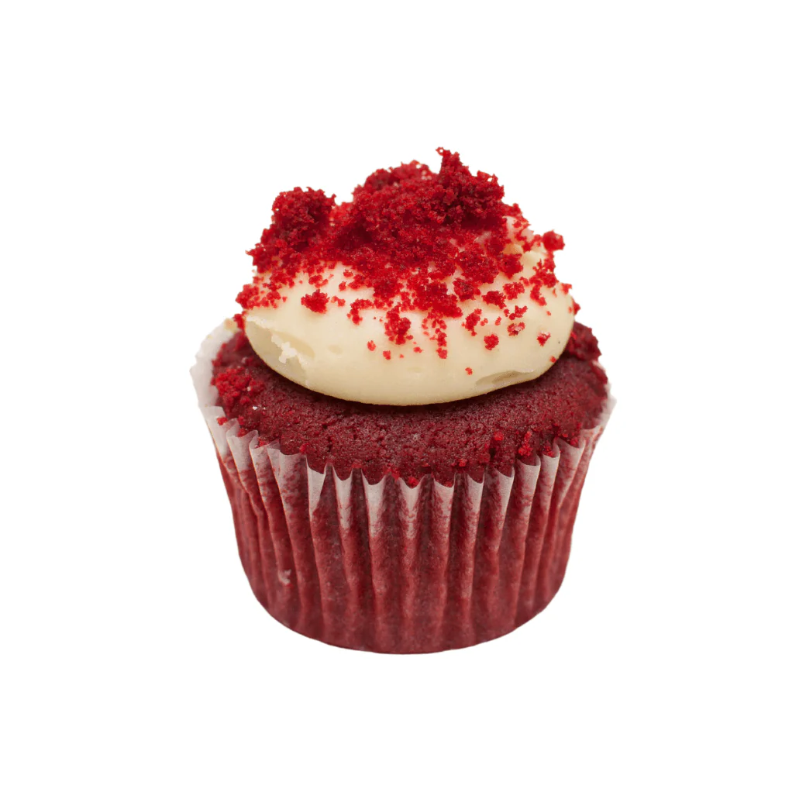

The Art of

Making
Red Velvet Cupcakes
Mystic Ingredients
- 2 large dragon eggs (room temperature)
- 1 cup crimson sugar (granulated)
- 1 stick butter (½ cup), softened by fire sprites
- 1 teaspoon of enchanted vanilla extract
- 1 ½ cups all-purpose spellbound flour
- 1 ½ teaspoons of ancient baking powder
- 1 pinch of salt from the Eternal Sea
- ½ cup moon milk
- 1 tablespoon of red potion (food coloring)
- 1 teaspoon cocoa powder (dark magic dust)
- 1 teaspoon white vinegar (balancer of spells)
The Ritual
- Preheat your magical oven to 350°F and line your enchanted cupcake molds with cupcake liners to contain
the magical essence.
- In a large bowl, summon together the dragon eggs and crimson sugar. Add the softened butter and
enchanted vanilla extract, and mix with a mystic whisk until smooth and creamy.
- In a separate bowl, sift the flour, baking powder, salt, and dark magic dust (cocoa powder). Whisper the
incantation of balance as you prepare these dry ingredients.
- In three stages, carefully add the dry ingredients to the egg-and-sugar mixture, alternating with the
moon milk. Stir with care, but avoid overmixing to preserve the magic.
- Add the red potion (food coloring), and finish with a dash of vinegar to activate the magical reaction,
giving the cupcakes their signature red hue and spellbinding rise.
- Scoop the enchanted batter into your prepared cupcake molds, but be cautious not to overfill them, for
they will rise under the oven's magic. Bake for 17-20 minutes until the cakes are firm but springy.
- Remove your Red Velvet Cupcakes from the oven, letting them cool on an enchanted rack for 2 minutes
before fully resting.